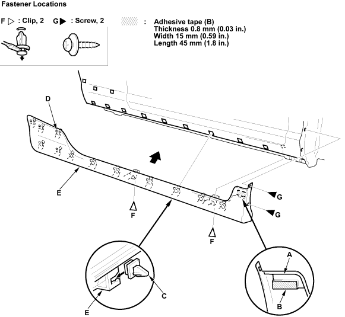

Scrape the old adhesive tape from the front lip (A), and clean the front lip surface with a sponge dampened in alcohol. Apply new adhesive tape (B) (3M 4213, or equivalent) onto the front lip. Clean the body bonding surface with a sponge dampened in alcohol.

Install the side clips (C) (11 places) and clip (D) (one place) on the side sill panel (E).
Hold the panel up and fit all the side clips into the holes in the body, then push on the panel until the clips snap into place and push the adhesive tape portion into place.
Install all the expansion clips (F) and screws (G).